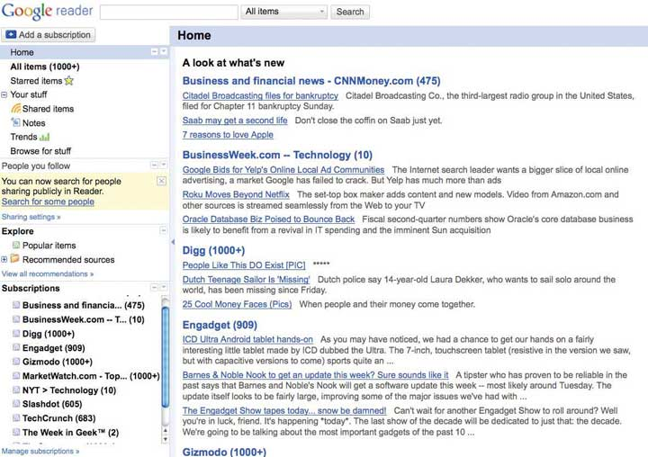

After studying this section you should be able to do the following:
RSSA method for sending/broadcasting data to users who subscribe to a service’s “RSS feed.” Many Web sites and blogs forward headlines to users who subscribe to their “feed,” making it easy to scan headlines and click to access relevant news and information. (an acronym that stands for both “really simple syndication” and “rich site summary”) enables busy users to scan the headlines of newly available content and click on an item’s title to view items of interest, thus sparing them from having to continually visit sites to find out what’s new. Users begin by subscribing to an RSS feed for a Web site, blog, podcast, or other data source. The title or headline of any new content will then show up in an RSS readerA tool for subscribing to and accessing RSS feeds. Most e-mail programs and Web browsers can also act as RSS readers. There are also many Web sites (including Google Reader) that allow users to subscribe to and read RSS feeds.. Subscribe to the New York Times Technology news feed, for example, and you will regularly receive headlines of tech news from the Times. Viewing an article of interest is as easy as clicking the title you like. Subscribing is often as easy as clicking on the RSS icon appearing on the home page of a Web site of interest.
Figure 6.1
RSS readers like Google Reader can be an easy way to scan blog headlines and click through to follow interesting stories.
Figure 6.2

Web sites that support RSS feeds will have an icon in the address bar. Click it to subscribe.
Many firms use RSS feeds as a way to mange information overload, opting to distribute content via feed rather than e-mail. Some even distribute corporate reports via RSS. RSS readers are offered by third-party Web sites such as Google and Yahoo! and they have been incorporated into all popular browsers and most e-mail programs. Most blogging platforms provide a mechanism for bloggers to automatically publish a feed when each new post becomes available. Google’s FeedBurner is the largest publisher of RSS blog feeds, and offers features to distribute content via e-mail as well.
FolksonomiesKeyword-based classification systems created by user communities. (sometimes referred to as social tagging) are keyword-based classification systems created by user communities as they generate and review content. (The label is a combination of “folks” and “sonomy,” meaning a people-powered taxonomy). Bookmarking site Del.icio.us and photo-sharing site Flickr (both owned by Yahoo!) make heavy use of folksonomies.
With this approach, classification schemes emerge from the people most likely to understand them—the users. By leveraging the collective power of the community to identify and classify content, objects on the Internet become easier to locate, and content carries a degree of recommendation and endorsement.
Flickr cofounder Stewart Butterfield describes the spirit of folksonomies, saying, “The job of tags isn’t to organize all the world’s information into tidy categories, it’s to add value to the giant piles of data that are already out there.”Daniel Terdiman, “Folksonomies Tap People Power,” Wired, February 1, 2005. The Guggenheim Museum in New York City and the San Francisco Museum of Modern Art, among other museums, are taking a folksonomic approach to their online collections, allowing user-generated categories to supplement the specialized lexicon of curators. Amazon.com has introduced a system that allows readers to classify books, and most blog posts and wiki pages allow for social tagging, oftentimes with hot topics indexed and accessible via a “tag cloud” in the page’s sidebar.
Mash-upsThe combination of two or more technologies or data feeds into a single, integrated tool. are combinations of two or more technologies or data feeds into a single, integrated tool. Some of the best known mash-ups leverage Google’s mapping tools. HousingMaps.com combines Craigslist.org listings with Google Maps for a map-based display for apartment hunters. IBM linked together job feeds and Google Maps to create a job-seeker service for victims of Hurricane Katrina. SimplyHired links job listings with Google Maps, LinkedIn listings, and salary data from PayScale.com. And Salesforce.com has tools that allow data from its customer relationship management (CRM) system to be combined with data feeds and maps from third parties.
Mash-ups are made easy by a tagging system called XMLAbbreviation of Extensible Markup Language. A tagging language that can be used to identify data fields made available for use by other applications. For example, programmers may wrap XML tags around elements in an address data stream (e.g., <business name>, <street address>, <city>, <state>) to allow other programs to recognize and use these data items. (for extensible markup language). Site owners publish the parameters of XML data feeds that a service can accept or offer (e.g., an address, price, product descriptions, images). Other developers are free to leverage these public feeds using application programming interfaces (APIs)Programming hooks, or guidelines, published by firms that tell other programs how to get a service to perform a task such as send or receive data. For example, Amazon.com provides APIs to let developers write their own applications and Websites that can send the firm orders., published instructions on how to make programs call one another, to share data, or to perform tasks. Using APIs and XML, mash-up authors smoosh together seemingly unrelated data sources and services in new and novel ways. Lightweight, browser-friendly software technologies like Ajax can often make a Web site interface as rich as a desktop application, and rapid deployment frameworks like Ruby on Rails will enable and accelerate mash-up creation and deployment.
In virtual worldsA computer-generated environment where users present themselves in the form of an avatar, or animated character., users appear in a computer-generated environment in the form of an avatarAn online identity expressed by an animated or cartoon figure., or animated character. Users can customize the look of their avatar, interact with others by typing or voice chat, and can travel about the virtual world by flying, teleporting, or more conventional means.
The most popular general-purpose virtual world is Second Life by Linden Labs, although many others exist. Most are free, although game-oriented worlds, such as World of Warcarft (with ten million active subscribers) charge a fee. Many corporations and organizations have established virtual outposts by purchasing “land” in the world of Second Life, while still others have contracted with networks to create their own, independent virtual worlds.
Even grade schoolers are heavy virtual world users. Many elementary school students get their first taste of the Web through Webkinz, an online world that allows for an animated accompaniment with each of the firm’s plush toys. Webkinz’s parent, privately held Ganz doesn’t release financial figures, but according to Compete.com, by year-end 2008 Webkinz.com had roughly the same number of unique visitors as FoxNews. The kiddie set virtual world market is considered so lucrative that Disney acquired ClubPenguin for three hundred fifty million dollars with agreements to pay another potential three hundred fifty million if the effort hits growth incentives.B. Barnes, “Disney Acquires Web Site for Children,” New York Times, August 2. 2007.
Most organizations have struggled to commercialize these Second Life forays, but activity has been wide-ranging in its experimentation. Reuters temporarily “stationed” a reporter in Second Life, presidential candidates have made appearances in the virtual world, organizations ranging from Sun Microsystems to Armani have set up virtual storefronts, and there’s a significant amount of virtual mayhem. Second Life “terrorists” have “bombed” virtual outposts run by several organizations, including ABC News, American Apparel, and Reebok.
Blogs, wikis, and social networks not only enable sharing text and photos, they also allow for the creation and distribution of audio and video. PodcastsDigital audio or video files served as a series of programs or a multimedia blog. are digital audio files (some also incorporate video), provided as a series of programs. Podcasts range from a sort of media blog, archives of traditional radio and television programs, and regular offerings of original online content. While the term podcast derives from Apple’s wildly successful iPod, podcasts can be recorded in audio formats such as MP3 that can be played on most portable media players. (In perhaps the ultimate concession to the market leader, even the iPod rival Microsoft Zune refers to serialized audio files as podcasts on its navigation menu).
There are many podcast directories, but Apple’s iTunes is by far the largest. Anyone who wants to make a podcast available on iTunes can do so for free. A podcast publisher simply records an audio file, uploads the file to a blog or other hosting server, then sends the RSS feed to Apple (copyrighted material cannot be used without permission, with violators risking banishment from iTunes). Files are discovered in the search feature of the iTunes music store, and listings seamlessly connect the user with the server hosting the podcast. This path creates the illusion that Apple serves the file even though it resides on a publisher’s servers.
While blogs have made stars of some unknowns, the most popular podcasts are from mainstream media outlets. A recent visit to the podcasting section of iTunes showed that eight of the top ten most popular podcasts were high-quality productions of mainstream media programs, including offerings from CBS, Comedy Central, NPR, and PBS. Podcats are also revolutionizing education, with scores of universities “open sourcing” their classrooms and offering lectures for public consumption via Apple’s iTunesU.
In contrast to iTunes, YouTube actually hosts video on its own servers, so all you need to do is shoot a video and upload it to the site. YouTube is a bastion of amateur video, with most clips shot and uploaded by nonprofessionals. It’s also become a protest site (examples: “United Breaks Guitars” and “A Comcast Technician Sleeping on my Couch”). However, YouTube has also become a go-to distribution platform for professional content such as ad clips, customer support guides, music videos, TV shows, movies, and more. Much of this rich mediaContent that is more complex that simple text or photos. The term can refer to animation, audio, and video. content can be distributed or streamed within another Web site, blog, or social network profile.